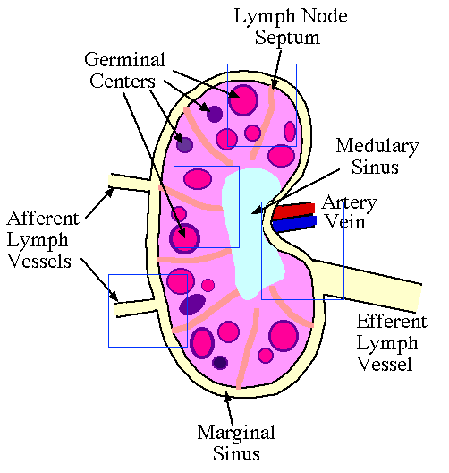

Directions
Below is a diagram of a lymph node. The user will see images with
blue boxes which are hot spots that are hyperlinked to higher
magnifications that zoom in. To go back to lower powers,
just click on the image outside of the blue boxes to zoom out.

� Copyright 2000 Department of Biology,
Davidson College, Davidson, NC 28036
Send comments, questions, and suggestions to: macampbell@davidson.edu